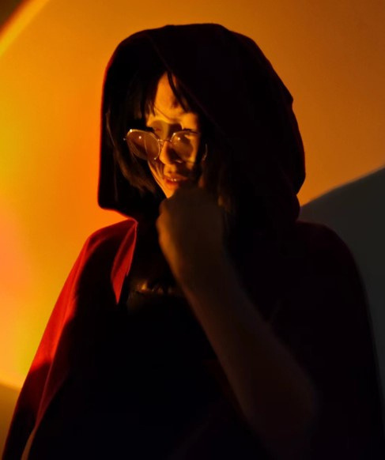

CROSS-PLATFORM PRODUCT DESIGN
从系统体验到
商业产品

UI/UX DESIGNER · SHANGHAI

我是一名拥有 4 年以上相关经验的 UI/UX 设计师，专注于 AI、系统级产品与跨平台交互。具备产品定义、体验架构及研发协作能力，也拥有编程背景，能够在用户体验、技术边界与实现成本之间做出取舍。
AI EXPERIENCE DESIGN
CROSS-PLATFORM PRODUCT DESIGN
MORE EXPLORATIONS
AI CODING · HUMAN–AI CO-CREATION
从内容架构、视觉系统到前端实现，我负责定义目标、提出约束并验收体验，通过 AI Coding 把设计判断持续转化为可以运行的网站。
AI 提升了实现效率，设计判断、需求拆解与最终决策始终由我完成。
ABOUT ME
我以用户意图为起点，持续在系统体验与商业产品之间工作。